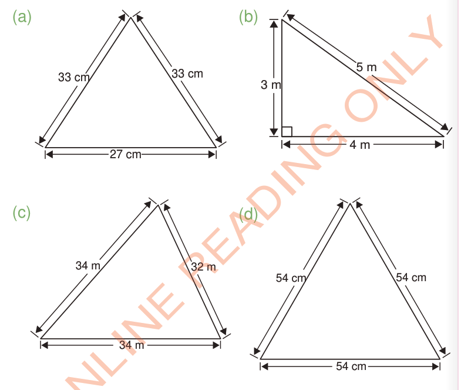

Exercise 3
1. Find the perimeter of each of the following triangles:

(a)
33 cm
33 cm
27 cm
(b)
3 m
4 m
5 m
(c)
34 m
34 m
32 m
(d)
54 cm
54 cm
54 cm
2. Find the perimeter of a triangle whose sides are 26 m, 24 m and 10 m.
3. A triangle has sides of lengths; 84 cm, 85 cm and 13 cm.
Find its perimeter.
Word problems involving perimeter
Word problems involving perimeters are mathematical questions written in one or more sentence.The concept of perimeter is used to solve such real-life problems.